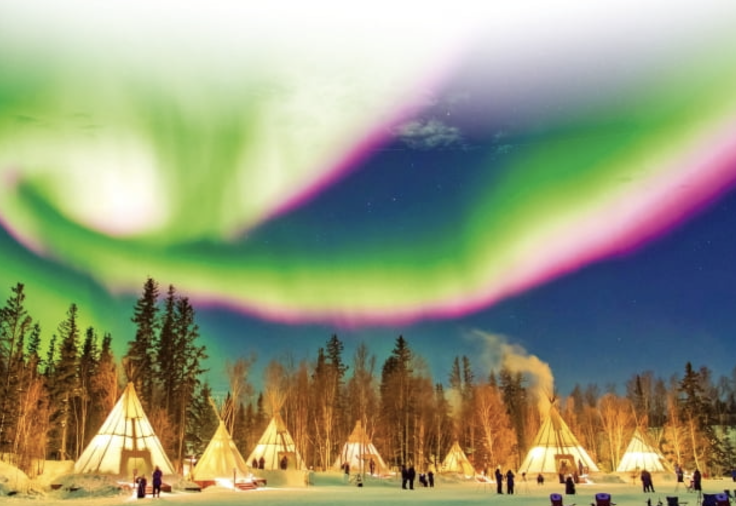
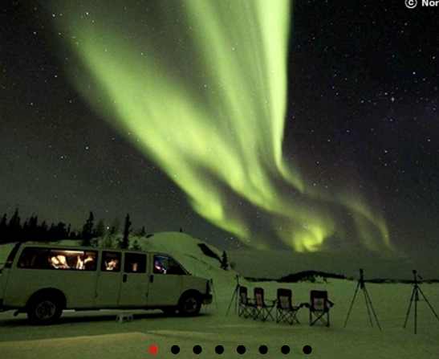
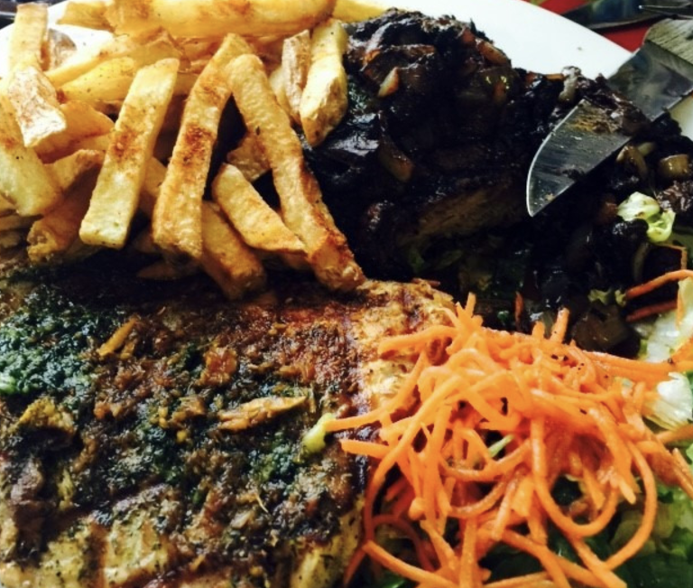

1. 옐로나이프에 대하여
캐나다 중앙부에 위치한 옐로나이프는 오로라 체험을 중심으로 한 관광업과 다이아몬드 채굴로 유명한 도시이다. 오로라는 신비한만큼 보기도 힘든데 밤하늘은 맑아야하고 주변은 앞이 안보일정도로 어두워야한다. 그런데 ! 미국 나사가 꼽은 세계 최고의 오로라 관측지가 바로 캐나다 옐로나이프이다. 연평균 거의 240일....!!! 가까이 오로라가 보일 정도라고 한다.
2. 옐로나이프 교통과 기후
위치가 위치인만큼 겨울 날씨는 혹독하다. 1월의 평균 기온은 영하 20도이며 영하 50도까지 떨어지는.. 경우도 있다고 한다. 다만 여름에는 상당히 따뜻한 17도 정도를 유지한다고 한다. 겨울이 상당히 길어 여름은 짧다. 대중교통 시스템은 잘 되어있지 않아 렌트카가 필수라고 한다. 캐나다의 다른 유명도시에서 이 도시까지는 너무 멀기 때문에 기차를 추천한다.
3. 옐로나이프, 너 오로라 보러 왔잖아
1. 오로라 빌리지
사실상 옐로나이프의 방문 이유. 이곳은 옐로나이프 시내에서 약 20분 거리 떨어진 곳으로 오로라 관측지이다. 오로라 빌리지 내에서 오로라 관측에 관련된 모든 것을 빌릴 수 있는데, 잠을 자는 공간이 아닌 오로라를 보기 위한 앉아있는 텐트 등을 빌릴 수 있다. 가장 좋은 시나리오는 간이 스토브 등을 차에 싣고 유명 오로라 포인트들을 찾아다는 것이라고 한다. 오로라 빌리지 내에서 야식도 사 먹을 수 있다고 한다.
2. 오로라 헌팅
오로라 빌리지와 조금은 다른 오로라 보는 방법이다. 준비된 차량에 탑승해 전문가의 분석하에 날마다 다른 오로라 관측 지역으로 이동하며 가장 잘 보이는 오로라를 찾아다니는 투어이다. 오로라를 볼 수 있는 확률이 매우 높지만 차량에서 대기해야하기 때문에 매우 춥다는 단점이 있다고 한다.
3. 오로라 관련 꿀팁들
첫번째로 방한 신발은 조금 작은게 좋다. 신발에 공간이 생기면 그 사이로 찬 공기가 들어와 매우 춥다고 한다. 두번째. 폰이 매우 좋은게 아니면 그냥 숙소에 두고 가는 것이 좋다고 한다. 매우 추운 기후 때문에 아이폰은 방전이 되는 경우도 허다하고 중요한 것은 맨눈으로 아름다운 풍경을 감상하는 것이기 때문이다.
4. 옐로나이프 먹거리
1. 들소와 곤들메기 요리
매우 작은 도시라 대표하는 먹거리 같은 건 없지만 쉽게 접할 수 있는 먹거리를 소개해보겠다. 극지의 요리 답게 아메리카 들소와 북극 곤들메기를 접할 수 있다. 들소고기는 조금 질기지만 칼로리는 매우 낮고 거의 단백질으로만 이루어진 슈퍼푸드이다. 곤들메기는 극한의 환경에서 살아온 생선이라 아주 부드럽고 그 크기도 크다고 한다.
2. 스프와 햄버거 등..
따뜻한 몸을 녹여줄 스프와 햄버거, 감자튀김 등 주변에서 쉽게 접할 수 있는 음식이 많다.